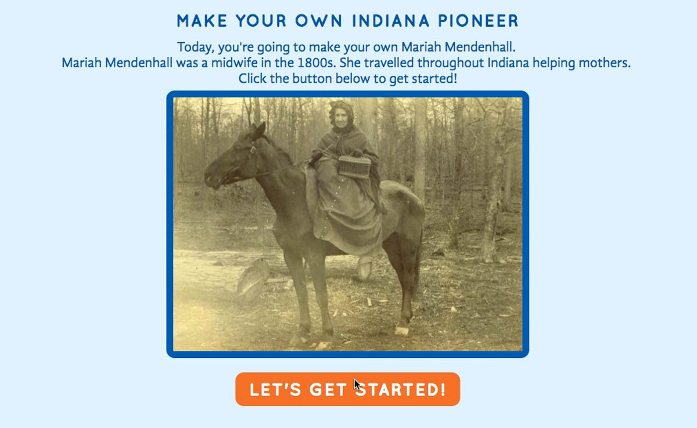
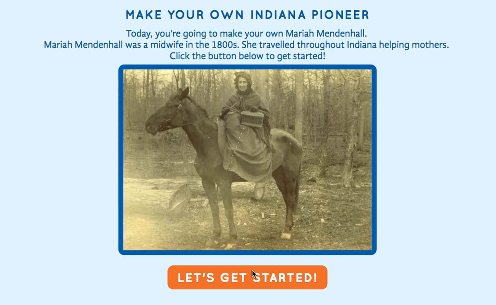

Electronic Fieldtrips
I worked with the Digital Corps to make an Educational App used by 3rd, 4th, and 5th graders in classrooms across Indiana. In a team of five designers and developers we made games, articles, and activities based on lesson plans about Indiana. We then made videos, games, articles, and other assets that coordinated with the lesson plans to teach kids about Indiana pioneers.
ROLE: Design, Coding, Illustration
TEAM MEMBERS: Head Designers: Sydney Patton, Grace Winiger DESIGNERS: Anna Weddle, Leah Callahan, Marisa Lozano, Reanna Miller
Awards: 2016 W3 Awards Gold Winner: "Family and Kids" 2016 W3 Awards Silver Winner: "Education"
 
